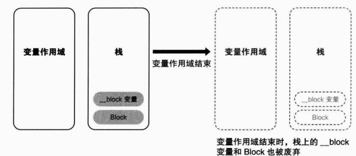
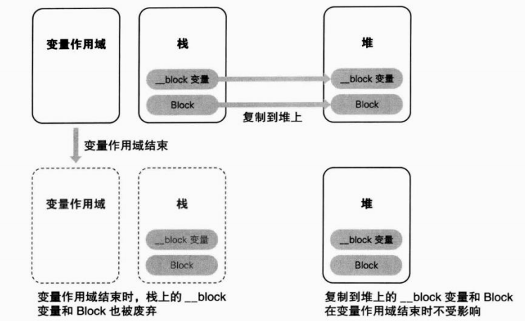

通过前面说明可知, Block转换为 Block的结构体类型的自动变量, block变量转换为 block变量的结构体类型的自动变量。所谓结构体类型的自动变量,即栈上生成的该结构体的实 例。如表2-2所示。
| 名称 | 实质 |
|---|---|
| Block | 栈上Bock的结构体实例 |
| __block变量 | 栈上__block变量的结构体实例 |
另外,通过之前的说明可知 Block也是 Objective-C对象。将 Block当作 Objective-C对象来 看时,该 Block的类为 __NSConcreteStack Block。虽然该类并没有出现在已变换源代码中,但有很多与之类似的类,如:
首先,我们能够注意到 NSConcreteStack Block类的名称中含有“栈”( stack)一词,即该类 的对象 Block设置在栈上。 同样地, NSConcreteGlobalBlock类对象如其名“全局”( global)所示,与全局变量一样, 设置在程序的数据区域(data区)中。 _NSConcreteMallocBlock类对象则设置在由 malloc函数分配的内存块(即堆)中。 具体整理如表2-3及图26所示
| 类 | 设置对象的存储域 |
|---|---|
| _NSConcrete Stack Block | 栈 |
| _NSConcrete Global Block | 程序的数据区域(data区) |
| _NSConcrete Malloc Block | 堆 |
到现在为止出现的 Block例子使用的都是 NSConcrete Stack Block类,且都设置在栈 上。但实际上并非全是这样,在记述全局变量的地方使用Blck语法时,生成的 Block为_NSConcreteGlobalBlock类对象。例如:
void (^blk)(void)=^{printf("Global Block\n");}
int main(
此源代码通过声明全局变量bk来使用 Block语法。如果转换该源代码,就会生成在23.1 节中讲到的那种 Block, Block用结构体的成员变量isa的初始化如下:
impl.isa =&_NSConcreteGlobalBlock;
该 Block的类为 NSConcreteGlobalBlock类。此 Block即该 Block用结构体实例设置在程序
的数据区域中。因为在使用全局变量的地方不能使用自动变量,所以不存在对自动变量进行截
获。由此 Block用结构体实例的内容不依赖于执行时的状态,所以整个程序中只需一个实例。因
此将 Block用结构体实例设置在与全局变量相同的数据区域中即可。
只在截获自动变量时, Block用结构体实例截获的值才会根据执行时的状态变化。
例如以下
源代码中,虽然多次使用同一个 Block语法,但每个for循环中截获的自动变量的值都不同。
typedef int (^blk_t)(int);
for (int rate = 0; rate < 10: ++rate){
blk_t blk =^(int count){return rate * count;}
}
上面 Block语法生成的 Block用结构体实例在每次for循环中截获的值都不同。
但是以下源
代码中在不截获自动变量时, Block用结构体实例每次截获的值都完全相同
typedef int (^blk_t)(int);
for(int rate =- 0;rate<10;++rate){
blk_t blk =^(int count){return count;};
}
也就是说,即使在函数内而不在记述广域变量的地方使用 Block语法时,只要Bck不截获 自动变量,就可以将 Block用结构体实例设置在程序的数据区域。 虽然通过 clang转换的源代码通常是 _NSConcreteStackBlock类对象,但实现上却有不同。 总结如下:
在以上这些情况下, Block为 _NSConcreteGlobalBlock类对象。即 Block配置在程序的数据 区域中。除此之外的 Block语法生成的Bock为 _NSConcreteStack Block类对象,且设置在栈上。 那么将Blok配置在堆上的 _NSConcreteMalloc Block类在何时使用呢?这正是上一节最后遗 留问题的答案。上节遗留问题为:
配置在全局变量上的 Block,从变量作用域外也可以通过指针安全地使用。但设置在栈上的 Block,如果其所属的变量作用域结束,该 Block就被废弃。由于 __block变量也配置在栈上,同 样地,如果其所属的变量作用域结束,则该 __block变量也会被废弃。如图2-7所示。
Blocks提供了将 Block和 __block变量从栈上复制到堆上的方法来解决这个问题。将配置在 栈上的 Block复制到堆上,这样即使 Block语法记述的变量作用域结束,堆上的Bock还可以继 续存在。如图28所示。
复制到堆上的 Block将 NSConcreteMalloc Block类对象写入 Block用结构体实例的成员变量isa.
impl.isa =&_NSConcreteMallocBlock;
而__block变量用结构体成员变量__forwarding可以实现无论 __block变量配置在栈上还是 堆上时都能够正确地访问 __block变量。 在235节中已详细说明,有时在 __block变量配置在堆上的状态下,也可以访问栈上的 __block变量。在此情形下,只要栈上的结构体实例成员变量__forwarding指向堆上的结构体实例, 那么不管是从栈上的 __block变量还是从堆上的 __block变量都能够正确访问。 那么 Blocks提供的复制方法究竟是什么呢?实际上当ARC有效时,大多数情形下编译器 会恰当地进行判断,自动生成将Bck从栈上复制到堆上的代码。我们来看一下下面这个返回 Block的函数。
typedef int (^blk_t)(int);
blk_t func (int rate){
return ^(int count){return rate * count;);
}
该源代码为返回配置在栈上的 Block的函数。即程序执行中从该函数返回函数调用方时变量 作用域结束,因此栈上的 Block也被废弃。虽然有这样的问题,但该源代码通过对应ARC的编 译器可转换如下:
blk_t func (int rate){
blk_t tmp = &func_block_impl_0(
__func_block_func_0,&__func_block_desc_0_DATA, rate);
tmp = objc_retainBlock(tmp);
return objc_autoreleaseReturnValue(tmp) ;
}
另外,因为ARC处于有效的状态,所以 blk_t tmp实际上与附有 __strong修饰符的blk_t __strong tmp相同。 然而通过objc4运行时库的 runtime/objc-arm可知, objc_retain Block函数实际上就是 Block_copy函数。即
tmp Block copy(tmp);
return objc_autoreleaseReturnValue(tmp);
过程中到底发生了什么呢?我们通过下列源代码中的注释来看看。
/*
*将通过B1ock语法生成的 Block,
*即配置在栈上的B1ock用结构体实例
*赋值给相当于B1。ck类型的变量tmp中。
*/
tmp = _Block_copy( tmp )
/*
*_Block_copy函数
*将栈上的B1ock复制到堆上。
*复制后,将堆上的地址作为指针赋值给变量tmp
*/
return objc_autoreleaseReturnValue( tmp );
/*
*将堆上的Bock作为 Objective-C对象
*注册到 autoreleasepoo1中,然后返回该对象。
*/
将 Block作为函数返回值返回时,编译器会自动生成复制到堆上的代码。 前面讲到过“大多数情况下编译器会适当地进行判断”,不过在此之外的情况下需要手动生 成代码,将 Block从栈上复制到堆上。此时我们使用“copy实例方法”。这就是ARC一章中大 量出现的 alloc/new/copy/mutable Copy方法中的一个方法,copy方法。那么编译器不能进行判断 究竟是什么样的状况呢?如下所示:
但是如果在方法或函数中适当地复制了传递过来的参数,那么就不必在调用该方法或函数前 手动复制了。以下方法或函数不用手动复制。
举个具体例子,在使用 NSArray类的 enumerateObjectsUsing Block实例方法以及 dispatch_async函数时,不用手动复制。相反地,在 NSArray类的 init WithObjects实例方法上传递 Block 时需要手动复制。下面我们来看看源代码。
-(id) getBlockArray{
int val 10;
return [[NSArray alloc] initwithobjects:
^ NSLOg(@"b1k0:%d",va1);},
^ NSLOg(@"b1k1:%d",va1);},nil];
}
get BlockArray方法在栈上生成两个 Block,并传递给 NSArray类的 init WithObjects实例方法。 下面,在 getBlock Array方法调用方,从 NSArray对象中取出 Block并执行
id obj= getBlockArray();
typedef void (^blk_t)(void);
blk_t blk = (blk_t)[obj objectAtIndex: 0];
b1k();
该源代码的bk(),即Blok在执行时发生异常,应用程序强制结束。这是由于在 get BlockArray函数执行结束时,栈上的 Block被废弃的缘故。可惜此时编译器不能判断是否需要 复制。也可以不让编译器进行判断,而使其在所有情况下都能复制。但将 Block从栈上复制到堆 上是相当消耗CPU的。当 Block设置在栈上也能够使用时,将Bock从栈上复制到堆上只是在 浪费CPU资源。因此只在此情形下让编程人员手动进行复制。 该源代码像下面这样修改一下即可正常运行。
-(id)getBlockArray{
int val = 10;
return [[NSArray alloc] initwithobjects:
[^{NSLog(@"blk: %d", val);} copy];
[^{NSLog (@"blk: %d", val);} copy],nil];
}
虽然看起来有点奇怪,但像这样,对于 Block语法可直接调用copy方法。当然对于 Block 类型变量也可以调用copy方法。
typedef int (^blk_t)(int);
blk_t blk =^(int count){return rate*count;}
blk = [blk copy];
另外,对于已配置在堆上的 Block以及配置在程序的数据区域上的 Block,调用copy方法又 会如何呢?笔者按配置 Block的存储域,将copy方法进行复制的动作总结了出来,如表24所示。
| Bock的类 | 副本源的配置存储域 | 复制效果 |
|---|---|---|
| _NSConcreteStackBlock | 栈 | 从栈复制到堆 |
| _NSConcreteGlobalBlock | 程序的数据区域 | 什么也不做 |
| _NSConcreteMallocBlock | 堆 | 引用计数增加 |
不管 Block配置在何处,用copy方法复制都不会引起任何问题。在不确定时调用copy方法即可。 但是在ARC中不能显式地 release,那么多次调用copy方法进行复制有没有问题呢?我们看 一下下面源代码。
blk =[[[[blk copy] copy] copy] copy ];
该源代码可解释如下:
{
blk_t tmp = [blk copy];
blk = tmp;
}
{
blk_t tmp = [blk copy ];
blk = tmp;
}
{
blk_t tmp = [blk copy];
blk = tmp;
}
加入注释:
{
/*
*将配置在栈上的B1ock
*赋值给变量b1k中。
*/
blk_t tmp =[blk copy]
/*
*将配置在堆上的 Block赋值给变量tmp中,
*变量tmp持有强引用的 Block.
*/
blk = tmp;
/*
*将变量tmp的 Block赋值为变量blk,
*变量b1k持有强引用的B1ock。
*因为原先赋值的 Block配置在栈上,
*所以不受此赋值的影响。
*此时B1ock的持有者为
*变量b1k和变量tmp
}
/*
*由于变量作用域结束,所以变量tmp被废弃
*其强引用失效并释放所持有的B1ock。
*
*由于B1ock被变量blk持有,
*所以没有被废弃。
{
/*
*配置在堆上的 Block被赋值变量blk,同时变量b1k
*持有强制引用的B1ock。
*/
blk_t tmp = [blk copy ];
/*
*配置在堆上的B1ock被赋值到变量tmp中,变量tmp
*持有强引用的B1ock。
*/
blk = tmp;
/*
*由于向变量b1k进行了赋值,
*所以现在赋值的B1ock的强引用失效,
*/
/*
*Bock被释放。
*由于B1ock被变量tmp所持有,
*所以没有被废弃。
*变量b1k中赋值了变量tmp的 Block,
*变量b1k持有强引用的 Block
*此时B1ock的持有者为
*变量b1k和变量tmp
*/
}
/*
*由于变量作用域结束,变量tmp则被废弃,
*其强引用失效并释放所持有的B1ock
*由于变量b1k还处于持有的状态,
*Block没有被废弃
*/
/*
*下面重复此过程
*/
由此可看出,ARC有效时完全没有问题。